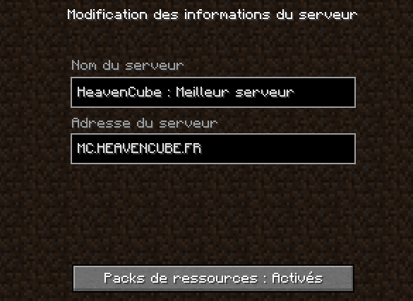

Comment commencer mon aventure ? Informations
Difficulté :
1. Première arrivée sur le serveur
Commence par rejoindre le serveur avec l'adresse de connexion : mc.heavencube.fr

Une fois ta première connexion sur le Survie, c'est ici que ton aventure commence avec les autres joueurs !
2. Les différents mondes
Pour expliquer simplement les choses, il existes plusieurs mondes très utiles :
Spawn : Monde d'origine, dès ta première connexion là où tu apparais. À ton réveil, tu apparais sur une île avec tes congénères pirates. C'est avec eux que tu vas partager tes aventures tumultueuses, c'est avec les habitants de l'île que tu vas pouvoir échanger des ressources, t'enrichir, ou encore participer à des activités rigolotes !
Survie : C'est dans ce monde que tu pourras faire ton aventure, construire des fermes, des bâtiments plus hauts les uns que les autres, défier tes amis dans des constructions magnifiques et de nombreuses autres choses à faire.
Attention
Il est impossible de casser dans le monde Survie si la zone n'est pas claim par ton clan, cela évite de détruire la map, la récolte de matériaux doit s'effectuer en monde Récolte !
Récolte : Pour collecter des matériaux en tout genre c'est par ici que ça se fera, rien de plus compliqué. Mais attention n'entrepose rien dans ce monde et ne commence pas ta base ici même si un coin te parait joli, elle sera supprimée à chaque régénération !
Nether : Le monde Nether te permettras de récupérer toutes les ressources du Nether que tu souhaites !
End : De même pour le monde End, avec ses nombreuses îles volantes, récupères y tout ce que tu souhaite mais fait attention à ne pas tomber dans le vide !
Information importante
Les mondes "récolte" (Récolte, Nether & End) sont régénérés le premier samedi du mois afin de permettre à tout le monde d'obtenir facilement des ressources de base.
- Récolte : 1er samedi du mois à 19h00.
- Nether : 1er dimanche du mois (tous les 2 mois, lorsque l'End ne regen pas) à 19h00.
- End : 1er dimanche du mois (tous les 2 mois, lorsque le Nether ne regen pas) à 19h00.
Après avoir pris connaissance de ces informations, tu peux alors te rendre en monde Récolte via la commande /warp afin de récolter toutes les ressources dont tu auras besoin, puis dans le monde Survie pour y fonder ta base !